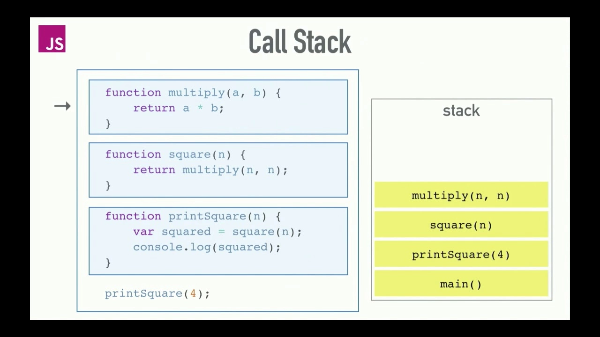

The Event Loop is one of the most important aspects to understand about
Node.js. The event loop continuously checks the call stack to see if there's any function that needs
to run. Concepts, like passing callbacks to functions or writing asynchronous code, are often not so
difficult to implement, which makes most JavaScript developers care less about what goes on under
the hood. They just don't care about understanding the complexities that have deeply abstracted from
them by the language.
As a JavaScript developer, it becomes increasingly important to understand what really happens under
the hood and how most of these complexities abstracted from us really work. It helps us make more
informed decisions, which can, in turn, boost our code performance drastically.

When you call the function printSquare() , it is pushed onto the call stack, the printSquare()
function calls the square() function. The square() function is pushed onto the stack and also calls
the multiply() function. The multiply function is pushed onto the stack. Since the multiply function
returns and is the last thing that was pushed to the stack, its get resolved first and is removed
from the stack, followed by the square() function and then the printSquare() function.